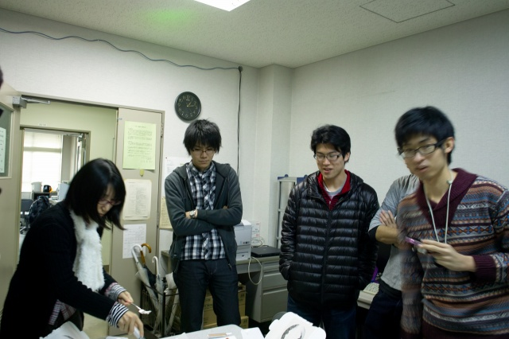

| ・ケーキを食べる会 (H23.12.22) | |||
昨年は24日でしたが今年は連休のため、早めにケーキを食べる会を開きました。今年のケーキ配分はどうなるのか？そして、切り分ける方法は？ケーキは、昨年まではケーキ購入先をK野先輩とM脇先輩が一手に引き受けていましたが、今年は助教の人です。近所にケーキ屋さん（le feve）が出来たので、そこで買いたかったそうです。 |
|||
|
様子がおかしい |
雪崩発生 | ||
|
生存者発見 |
T永くん「・・・・」 | ||
|
今年は飾りを外してから切り分けるそうです |
K岡さん＠切り分け係 | ||
|
取り分を虎視眈々と狙っています |

今回は12等分できました | ||
|
切り分けてしまえば雪崩なんて関係ない |
2つめの切り分け | ||
|
残ったクリームをM下くん味見中 |
着々と作業は進みます | ||
|
まずは村田先生に |
さて、話し合おうじゃないか | ||
|
フレッシュなイチゴ！ふつう砂糖漬けなのに |
スポンジもクリームもフワフワ | ||
|
砂糖が無くて、I上くんがおじさんをコーヒーに |
結局砂糖の代わりにならず | ||
|
現場検証 |
食後のケーキはいいもの | ||